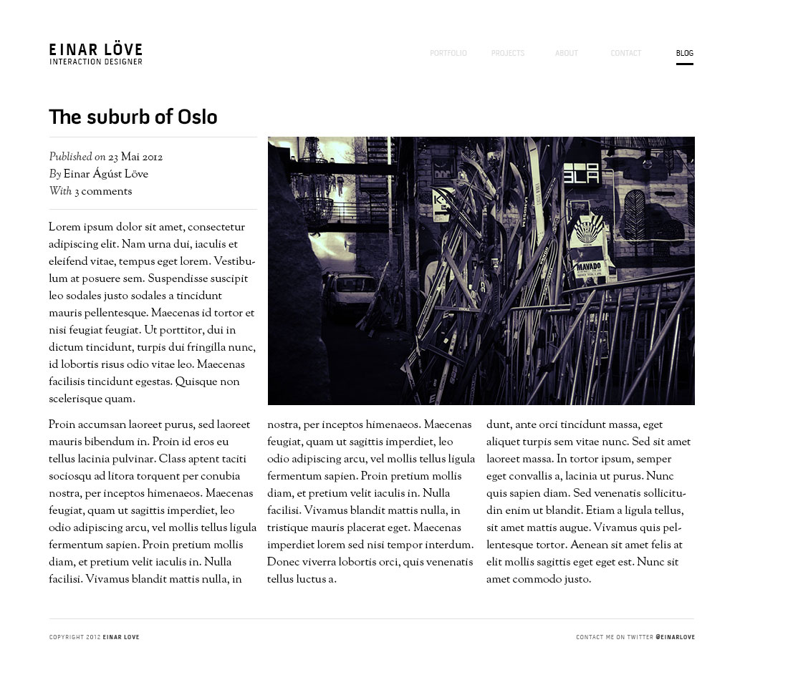
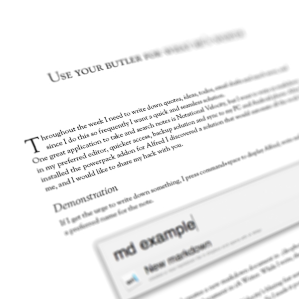
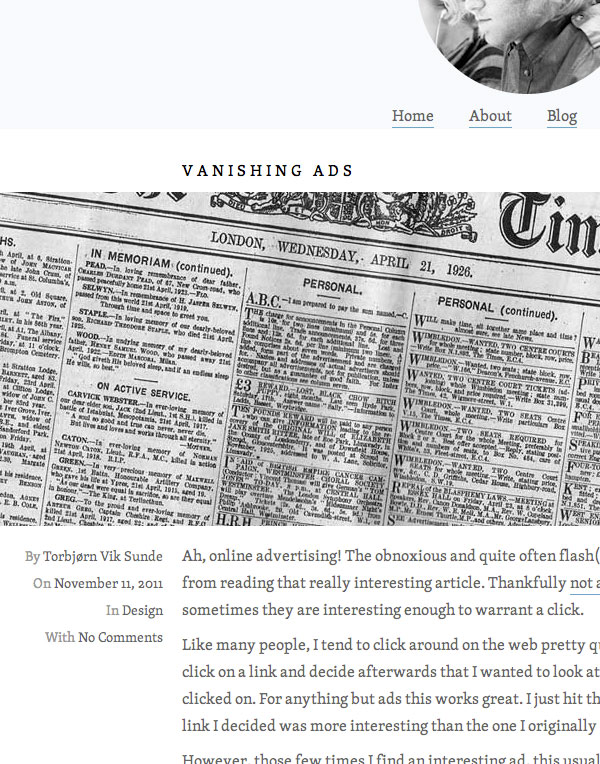

I have often delayed tasks and chores I've both liked and disliked, and made excuses and promisses to myself that next time I would not wait until last minute. But I repeat the mistake and tell myself that next time will be another story.
“I’m a last minute guy. A weekend before the submission is all I need, and I always finish!” — Not only me apparently, since I’ve heard that from countless people. Some of us accept it like it’s just a the way we operate and so long so good. But the quality of the product is never near the degree it could’ve if we used the time we had at hand. The familiar feeling nagging us, reminding us that that we should be ashamed, and reminding us of the consequences. That feeling affects us in a way that makes us guilty of doing anything else that is enjoyable, and with the addition of the procrastination, in my case, I just sit there switching between websites in a loop.
This blog for example, is a victim that I’ve delayed for too long. Since mid 2010 I have wanted a blog, but never got around to create it since I had to many expectations and requirements for the blog. Of course I had to design the blog myself and with something out of the ordinary and spectacularly magical. I was also indecisive of what audience I would write for nor the format.
In 2011 I moved to Oslo to study interaction design, where I picked up interests like typography, user experience and Javascript, and I got very opinionated on the subjects. The more I learned about usability, the more frustrated I got over the lack of it on the web and wanted to rant about it. A blog would’ve been a great place to get it off my chest, but the previous requirements persisted. I also learned Ruby on Rails to do backend solutions, so having my blog on Tumblr, Wordpress or Blogspot would be a missed opportunity for me to improve on the framework.
This summer while I was creating my portfolio at einarlove.com, I put an obligation to myself to finally do what I’ve been delaying. This is one of my first design drafts…

I really liked the resemblance of a magazine, but it did not accommodate more media elements then that single poster
But although the newest browsers support multi-column layout, the design was very dependent on the article length, did not look well with multiple images, and was bound to the fixed width layout which it inherited from the main site.
While reading the book Eldest, I fell in love with its font Sorts Mill Goudy, and it inspired me to try to design a layout with it and to make it feel like a layout from a book…

It was elegant and clean, but it was also its weakness. Embedding interactive elements, video or multiple images did not match with the sublime style.
Once again I was delaying the blog since I found flaws in every draft, which was demotivating because I really liked the designs. Fortunately on my backup drive, I found a design I did while distracting myself from an incompetent Flash teacher.

The article I used as a placefolder is Vanishing ads by Torbjørn Lunde
With it in mind, I built this blog’s design, with the expected feature of being fluid so it would adapt to the device screen for better readability.
Creating the blog both frontend and backend, gave me the power and capability to give the blog features like markdown editing, custom embed elements, slideshows and things i might find useful in the future. Although I am far from finished creating this blog at this date, I have finally gotten past the hardest design phase which I have been procrastinating the last two years.
To combat the procrastination, I’m using a “Do not break the chain” calendar since it’s just a kickstart I need when I already have the interest and motivation. I also have problem holding the focus, so with the local Hosts file I block the websites I know will distract me.
I don’t know how many articles I’ve shunned over the time, but now the excuse of not having a blog is gone. Obviously, since you’re on it now.